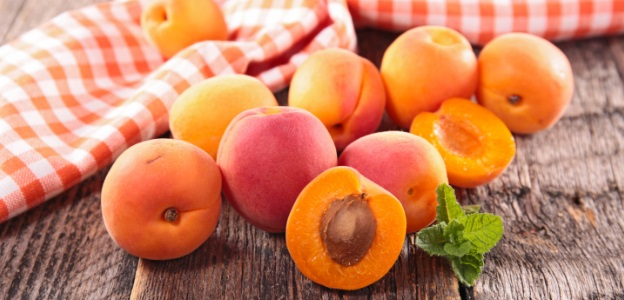
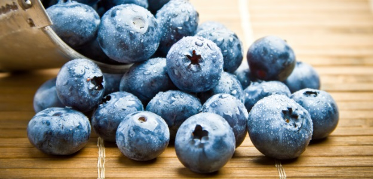
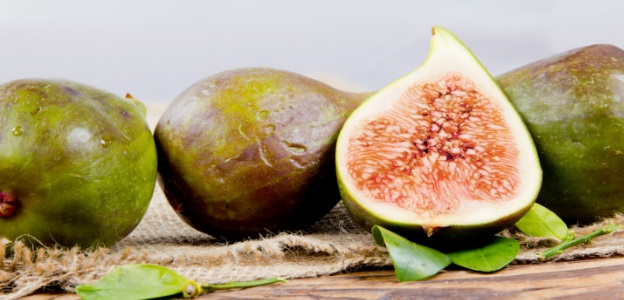

Кайсии
Само 300 грама на ден от този плод задоволява нуждите на организма от витамин А. Огромното количество калий пък прави тези плодове незаменими за профилактиката и лечението на сърдечно-съдовите заболявания и отоците.
Боровинки
Научно доказан факт е, че на антоцианините – веществата, които придават синия цвят на боровинката, се дължи и антираковото въздействие на това плодче върху човешкия организъм. Те атакуват свободните радикали, които са първопричина за появата на ракови образувания.
Смокини
Смокините са изключително полезни за здравето на сърцето. Освен това, този летен плод е с много високо съдържание на желязо - минералът, който спомага за създаването на червените кръвни клетки и предотвратяване на анемия.
